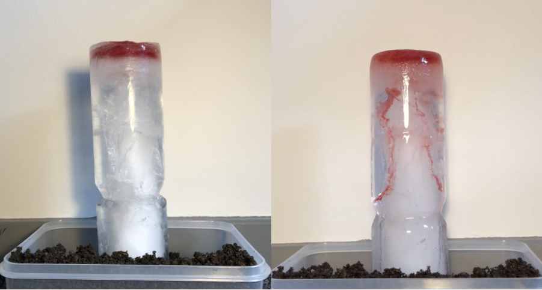
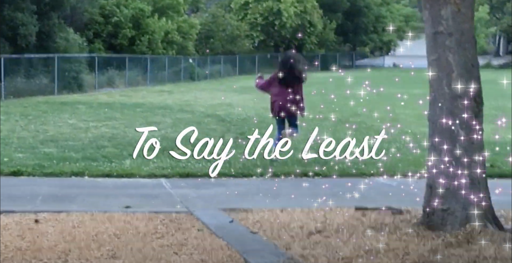

We were tasked with designing and coding a visualization for a certain set of data. The data I chose were about films with many variables that I tried to fit on the multiple pages that the user can flip bavk and forth from.

Create a column. What your interpretation of a column is create it. I ended up creating a column of ice, a column that wasn't made to last like most columns are. Not only does it melt, I added some color so people could watch it melt.

I was tasked to create a video that related to what was taught in a film and media studies class. I chose to create a music video for a friend's song. This is the link.